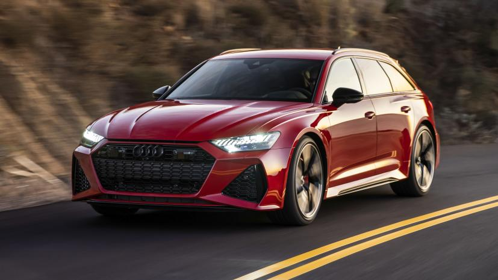

Jim's Cars
Introduction
Hello gizorkians and welcome to Jim's Cars! The number #1 dealer in the 5th quadrant! Want earth cars? Want them reasonably cheap? TLDR BUY THEM FROM US! Velit aut ullam et voluptas aut ut corrupti numquam. Illo aut iusto minus alias. Corrupti voluptatum eum et ducimus architecto ratione. A dolores qui earum in sed velit et asperiores. Tenetur suscipit aut cupiditate voluptatibus ut. Quae ea eveniet aliquam voluptatem ut porro est quia.
SUV
Sports Utility Vehicles, or SUVs, evolved over the beginning of the new millennium from conventional 4WDs. These high-riding, often all-wheel drive cars are designed to carry five or more passengers and usually feature large luggage space. SUVs are more geared toward around-town usage compared to off-road 4WDs and place a large emphasis on family use.
- Hyundai Kona Electric
- BMW X5
- RS6
If you like the way the Kona looks, then by all means go ahead. People buy on style more than anything else in this segment, so it’s almost incidental that the Kona is a reasonably well-sorted thing underneath. It doesn’t excel in any one area, but it doesn’t insult either.

BMW has got to know SUV buyers well, and has built a really solid entry. The basics are right. It's competent, and you don't have to spend a pile on options to get a desirable spec.

There’s something a damn sight more palatable about a performance estate than an SUV and the Audi RS6 proves this. In the current political and social climate, does the world really need a 600bhp family wagon?
Convertable
A convertible or cabriolet is a passenger car that can be driven with or without a roof in place. The methods of retracting and storing the roof vary between models. A convertible allows an open-air driving experience, with the ability to provide a roof when required. Potential drawbacks of convertibles are reduced structural rigidity (requiring significant engineering and modification to counteract the effects of removing a car's roof) and cargo space.
- MX-5
- 718 Boxster
- BMW 4 Series Convertible
The Mazda MX-5 isn’t the world’s best-selling roadster by accident: its recipe of simple mechanicals and accessible fun mean it’s a car with cheap running costs and broad appeal.
What we have here is – still – the best roadster on sale. But rather than look down on its rivals as a dominant, reigning leader, it’s kicking them away as they snap aggressively at its heels. The chassis really is one of the very best in the business, and until the lovely little lightweight Alpine, there was nothing to touch the Boxster and Cayman pairing when it came to a sports car offering a wonderfully judged mixture of everyday ability and otherworldly handling.
Just as the 4 Series Coupe is the best mid-sized sporty-lux coupe, the 4 Series Convertible is a class-leading drop-top. It hits every base: it’s refined top up or down, the engines are fabulous, it’s spacious and reasonably practical, well-finished and can be festooned with all the gadgets and assists you’d expect.